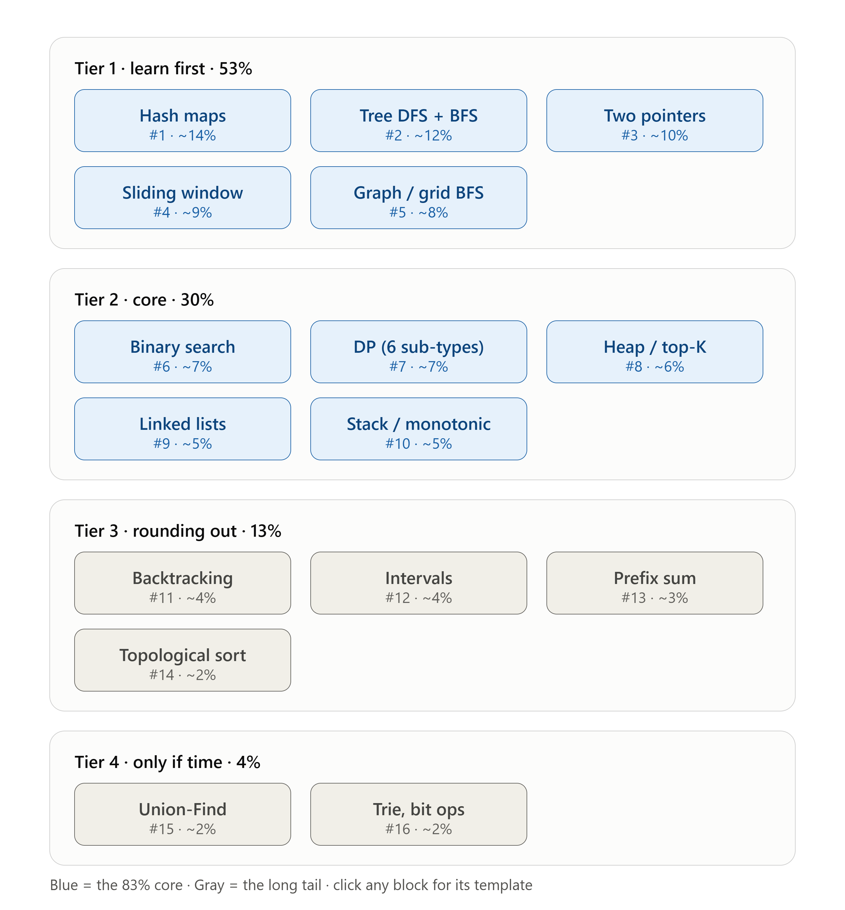

Java 21 · LeetCode-numbered · 184 core problems across 94 sub-variants
Three pattern bundles, same structure: a breakdown of every sub-variant, a prerequisite-ordered problem table, compiled Java templates, and a failure-mode table — then a cross-pattern recognition guide and spaced-repetition checkpoints.
35 sub-variants 78 core 34 optional 5 anti-pattern
0 / 78 core solved
28 sub-variants 52 core 35 optional 6 anti-pattern
0 / 52 core solved
31 sub-variants 54 core 40 optional 10 anti-pattern
0 / 54 core solved
LC 437 is LC 560 on a root path. LC 653 is LC 167 on two iterators. LC 220 is an ordered-multiset sliding window that happens to use a BST. LC 230 and LC 2476 are binary search with pointers instead of indices.
LC 329 is memoised DFS on a DAG — the same “return what composes, record what does not” split as tree recursion. LC 863 is a tree converted into an undirected graph. LC 778 and LC 1631 are binary search on the answer with a BFS standing in for the feasibility predicate.
If those seven sentences read as obvious, the patterns have transferred; if any of them reads as a surprise, that is the next thing to study.

126 pages across all five patterns
Each visualizer is driven by a real instrumented implementation — step with the arrow keys and the code pane highlights the line running at that frame. They pair with the tables above: the markdown tells you what to know, the visualizer shows you the failure the table is warning about.
The array and string pages go one further — type your own input and the trace rebuilds against it, so you can drive the algorithm into the edge case you are trying to understand. Look for the visualizer icon next to a problem in any table to jump straight to its page.
. ├─ index.html ← you are here ├─ three-patterns/ │ ├─ index.html hub: recognition guide, checkpoints │ ├─ two-pointers.html │ ├─ sliding-window.html │ ├─ binary-search.html │ └─ src/ markdown sources ├─ trees/ │ ├─ index.html hub: recognition guide, checkpoints │ ├─ traversal.html │ ├─ tree-recursion.html │ ├─ bst.html │ └─ src/trees.md ├─ graphs/ │ ├─ index.html hub: recognition guide, checkpoints │ ├─ traversal.html │ ├─ ordering.html │ ├─ weighted-paths.html │ └─ src/graphs.md ├─ Visuals/ │ ├─ index.html 126 interactive visualizers │ └─ <lc-number>-<slug>.html one self-contained page each ├─ assets/ └─ mdfiles/ archived notes, not part of the site